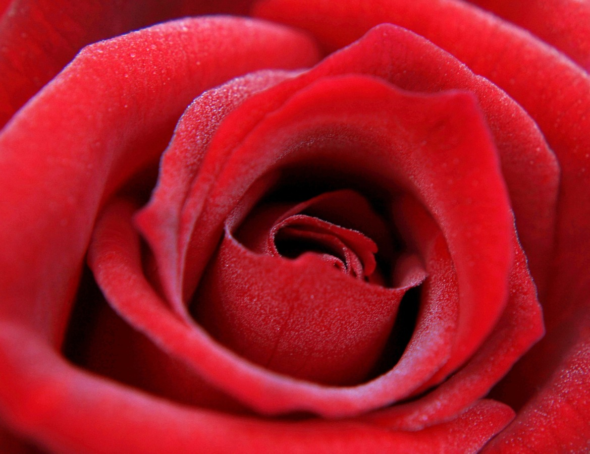

One of Louisville's most notible traditions is the Kentucky Derby, ran on the first Saturday in May and known for horse racing and the most beautiful hats. The Kentucky Derby has been run since 1875 at Churchill Downs. Known as The Most Exciting Two Minutes in Sport
, it is a mile and a quarter long horse race run by 3-year-old thoroughbreds. This event in Louisville draws an audience of thousands for the day of festivities. The winner of the race receives a blanket of roses to be draped over the horse.
In addition to the one day of the Derby, the day before is known as the Oaks. The Oaks is a day of racing at Churchill Downs when only fillies run. It is known as fillies for the lilies
since the winner of the race receives a blanket of lilies.
Derby weekend is truely the best weekend in Louisville.

| Year | Winner |
|---|---|
| 2020 | Authentic |
| 2019 | Country House |
| 2018 | Justify |
| 2017 | Always Dreaming |
| 2016 | Nyquist |
| 2015 | American Pharaoh |
| 2014 | California Chrome |
| 2013 | Orb |
| 2012 | I'll Have Another |
| 2011 | Animal Kingdom |
| 2010 | Super Saver |
| 2009 | Mine That Bird |
| 2008 | Big Brown |
| 2007 | Street Sense |
| 2006 | Barbaro |
| 2005 | Giacomo |
| 2004 | Smarty Jones |
| 2003 | Funny Cide |
| 2002 | War Emblem |
| 2001 | Monarchos |